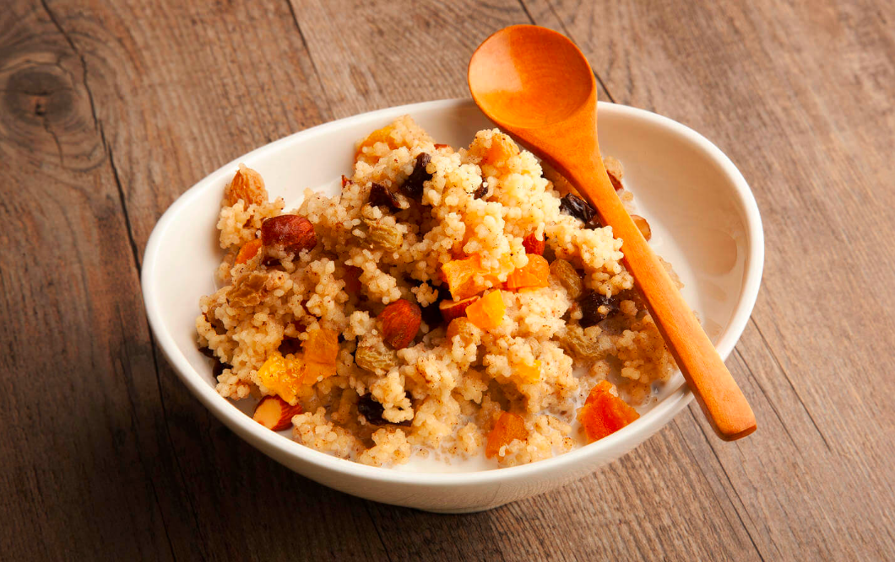

Cuscus
El cuscús es un plato hecho a base de sémola de trigo tradicional de la gastronomía del Magreb y cocina en África del Norte, en particular Argelia, Túnez, Marruecos y Mauritania.
Tiempo preparacion
- Hervir agua o caldo: 5 min
- Preparar el cuscús: 5 min
- Esponjar el cuscús y servir: 2-3 min
- Tiempo total: Aproximadamente 10-13 min
Instrucciones
- Lleva a ebullición 1 taza de agua o caldo con 1/2 cucharadita de sal y 1 cucharada de aceite o mantequilla.
- Retira del fuego, agrega 1 taza de cuscús, remueve y cubre. Deja reposar durante 5 minutos.
- Después de 5 minutos, destapa y esponja el cuscús con un tenedor.
- Añade vegetales, garbanzos, hierbas frescas, jugo de limón o frutos secos si lo deseas.